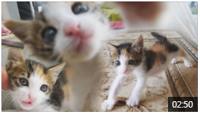

드라마 예능 교양 뉴스 라디오 스포츠 PD노트 AllVOD AllCLIP
로그인 | 회원가입 | 이용권/머니 | 검색 | 언어선택 | 프로그램
TV동물농장
방송중 매주 일요일 오전 9시 30분 | 좋아요 | 공유하기
프로그램 소개
프로그램 정보
진행자 소개
방송보기
다시보기
방송클립영상
제보하기
시청자 참여
시청자 게시판
유기견 찾기
동물농장 소식
교양PD노트
HARU하루
팟캐스트로 듣기

 드라마 예능 교양 뉴스 라디오 스포츠 PD노트 AllVOD AllCLIP
드라마 예능 교양 뉴스 라디오 스포츠 PD노트 AllVOD AllCLIP
드라마 예능 교양 뉴스 라디오 스포츠 PD노트 AllVOD AllCLIP
드라마 예능 교양 뉴스 라디오 스포츠 PD노트 AllVOD AllCLIP